Understanding Log Sources & Investigating with Splunk
Overview
This Hack The Box Academy practice focuses on using Splunk as a SOC investigation platform. The module covers SPL usage, field validation, Sysmon dashboards, LSASS access investigation, C2 callback analysis, PsExec activity, and analytics-driven hunting with statistical thresholds.
The goal was to move from raw logs into investigation logic: identify the right event source, build a query, validate fields, pivot into related activity, and explain the evidence clearly.
Tools and Log Sources
- Splunk Search & Reporting for SPL-based investigation.
- Sysmon App for Splunk for dashboards and reports.
- Windows Security logs for authentication events such as 4624 and 4768.
- Sysmon logs for process creation, network connections, image loads, process access, and remote thread creation.
Splunk Fundamentals - Question 1: Kerberos Ticket Requests
Question: Find the account name with the highest amount of Kerberos authentication ticket requests.
Kerberos authentication ticket requests map to Windows Security Event ID 4768.
index=* EventCode=4768
| stats count by Account_Name
| sort - count
| head 1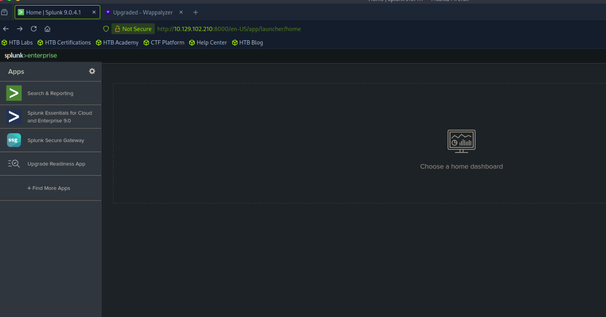
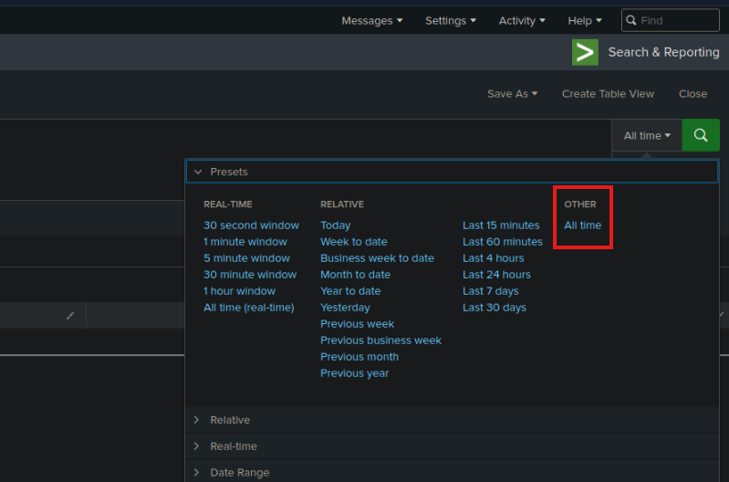
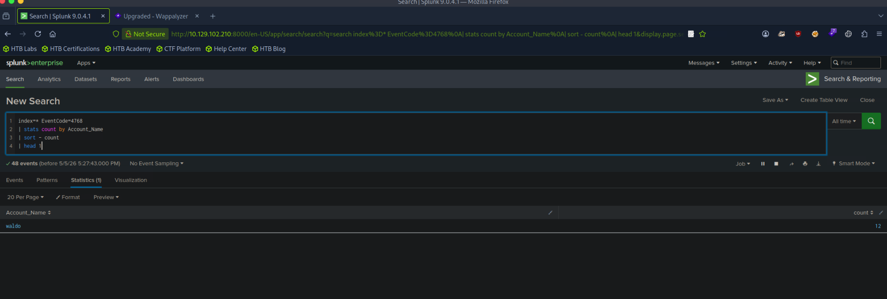
Answer:
waldoSplunk Fundamentals - Question 2: SYSTEM Distinct Computers
Question: Find the count of distinct computers accessed by the account name SYSTEM through 4624 events.
index="main" EventCode=4624
| stats dc(ComputerName) as unique_workstations by Account_Name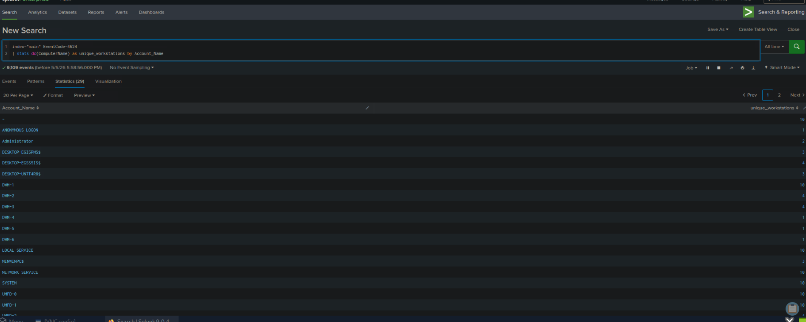
Answer:
10Splunk Fundamentals - Question 3: Short Login Window
Question: Identify accounts whose total login activity occurred within a time range of less than 10 minutes, then return the account with the highest login attempts.
index=* EventCode=4624
| stats count as login_attempts earliest(_time) as first_login latest(_time) as last_login by Account_Name
| eval duration_seconds=last_login-first_login
| where duration_seconds < 600
| sort - login_attempts
| head 1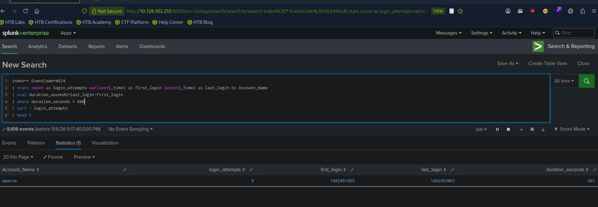
Answer:
aparsaUsing Splunk Applications - Setup: Sysmon Macro Fix
The Sysmon App for Splunk required a macro adjustment before dashboards and reports returned events. The correct macro definition pointed the app to the right index and sourcetype.
The first step was downloading the Sysmon App for Splunk from Splunkbase and installing it into the lab instance.
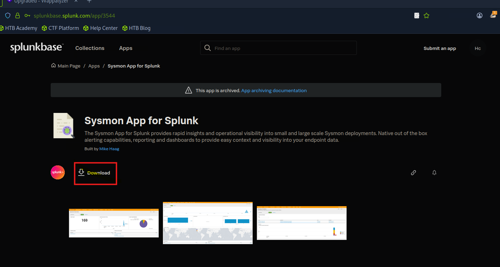
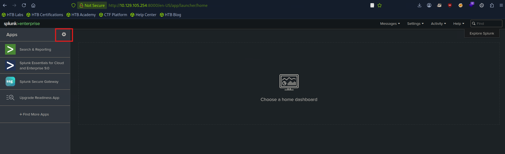
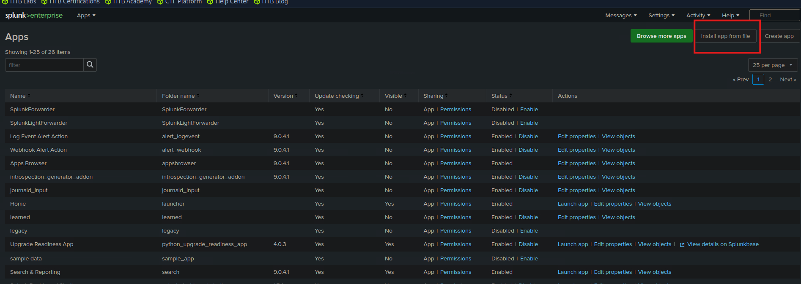
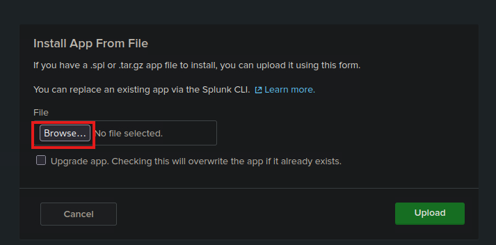
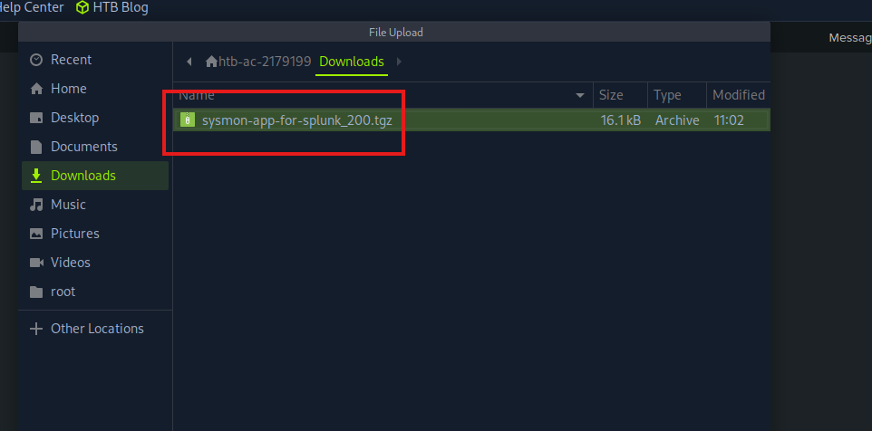
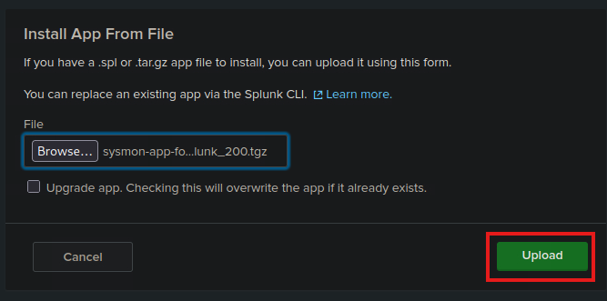
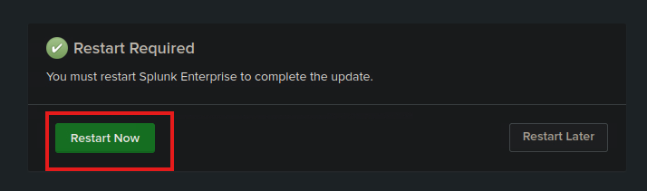
After installation, the app still needed its macro adjusted so it could find the Sysmon logs.
index="main" sourcetype="WinEventLog:Sysmon"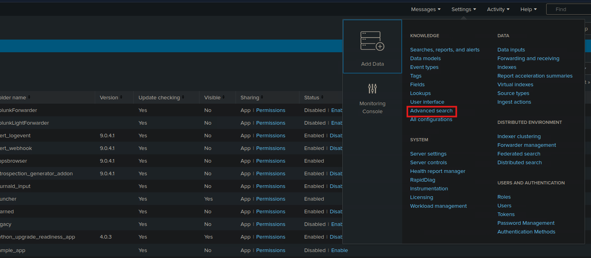
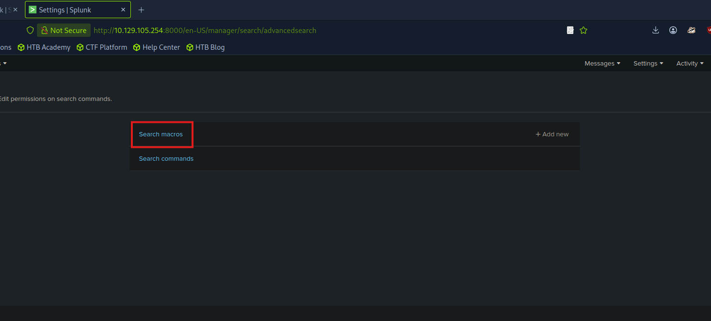
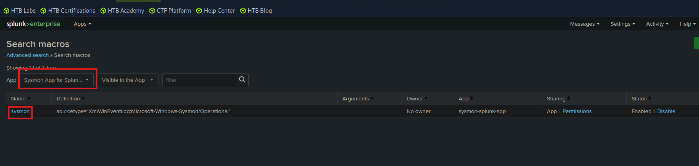
sysmon macro was selected for editing.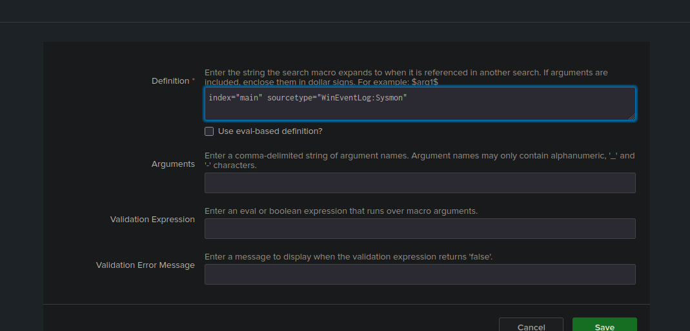
Using Splunk Applications - Question 1: Net View Report
Question: Fix the Net - net view report and provide the complete executed command.
After fixing the macro, I opened the Sysmon App for Splunk and went to the Reports tab.
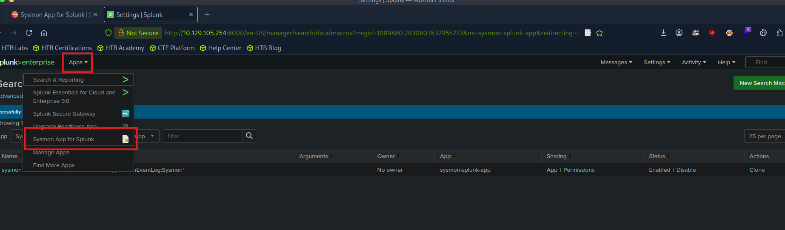
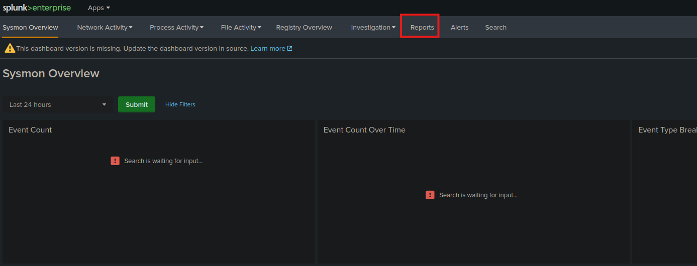
Net - net view report was identified in the Reports tab.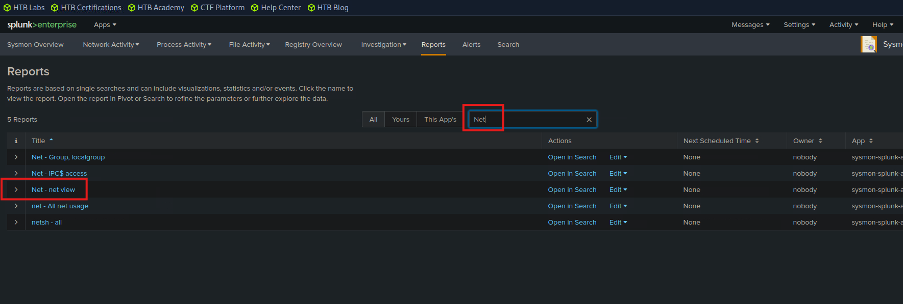
The original report returned no events because it referenced incorrect fields.
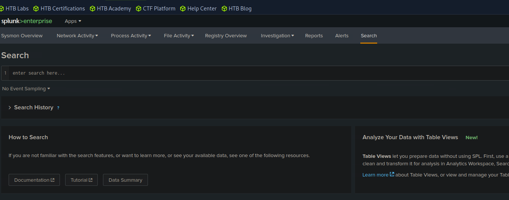
I changed the time range to All time and corrected the field usage.
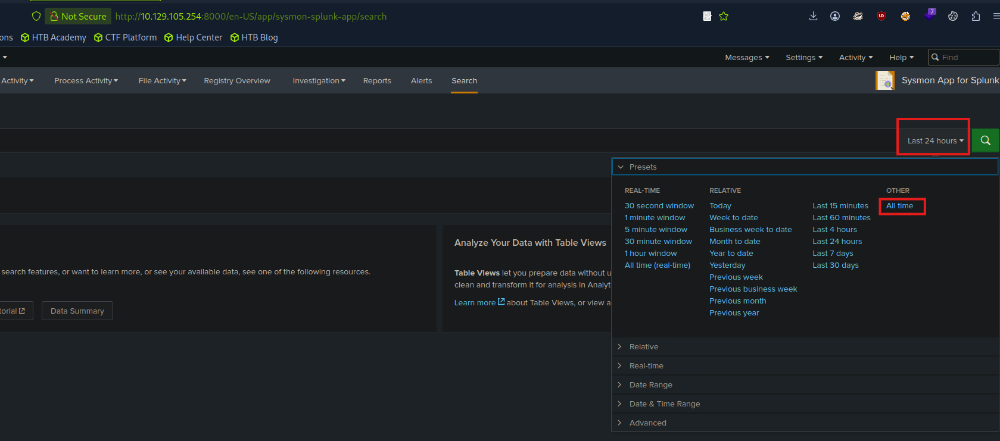
`sysmon` Image="*net.exe" (CommandLine="net view*")
| stats count by ComputerName,CommandLine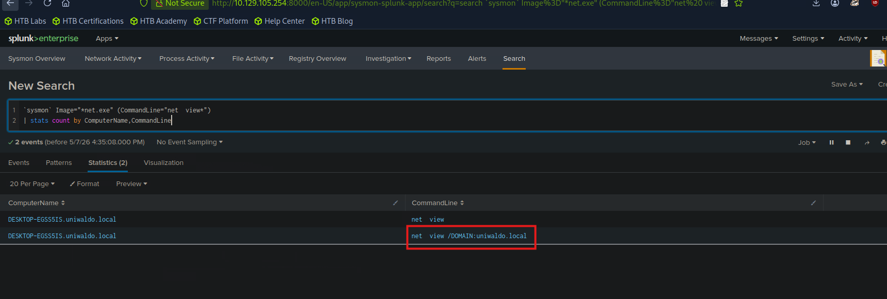
net view command.Answer:
net view /DOMAIN:uniwaldo.localUsing Splunk Applications - Question 2: SharpHound Network Connections
Question: Provide the number of connections initiated by SharpHound.exe.
Sysmon Event ID 3 records network connections. Before fixing the dashboard search, I inspected actual Sysmon network events to confirm the available field names.
`sysmon` EventCode=3 Image="*"The useful fields were EventCode, Image, and ComputerName. The corrected search counted only SharpHound network connection events.
`sysmon` EventCode=3 Image="*SharpHound.exe"
| stats countAnswer:
6Intrusion Detection - Question 1: Other LSASS Dumping Process
Question: Find the other process that dumped LSASS.
Sysmon Event ID 10 records process access. This is important for credential dumping investigations because
tools often open a handle to lsass.exe.
index="main" EventCode=10 lsass
| stats count by SourceImage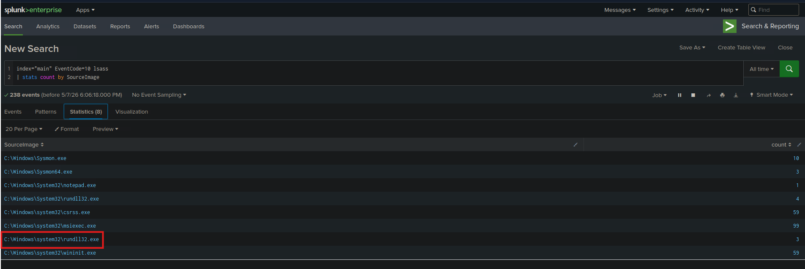
The lesson already investigated notepad.exe, so the other suspicious process was
rundll32.exe.
Answer:
rundll32.exeIntrusion Detection - Question 2: Misused DLL
Question: Find the method used by the other process to dump LSASS. Enter the misused DLL.
index="main" rundll32 lsass
| table _time, host, Image, CommandLine, ParentImage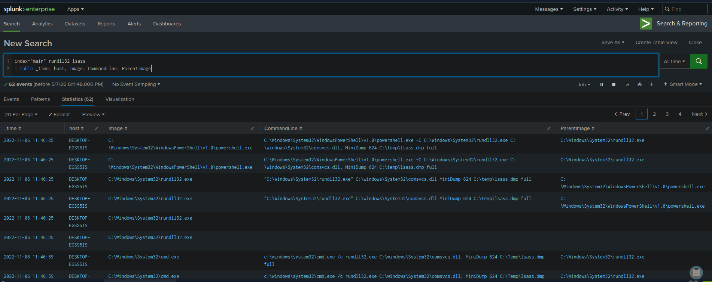
CommandLine field exposed the LSASS dump method.The command line exposed comsvcs.dll MiniDump, a known LSASS dump technique.
Answer:
comsvcs.dllIntrusion Detection - Question 3: Suspicious CLR Loads
Question: Find suspicious loads of clr.dll that could indicate C# injection
or execute-assembly activity, then identify the process used to temporarily execute code.
index="main" EventCode=7 ImageLoaded="*clr.dll"
| stats count by Image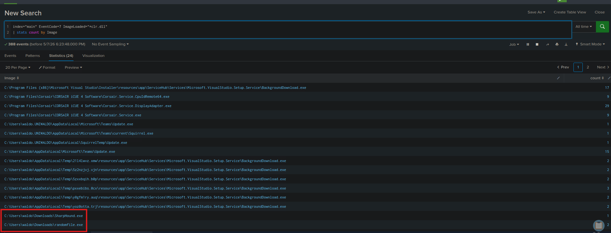
clr.dll can indicate .NET or C# execution.index="main" EventCode=1 Image="*rundll32.exe"
| stats count by ParentImage, Image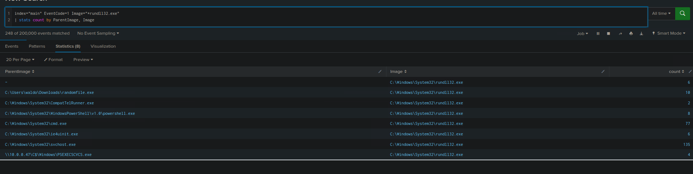
rundll32.exe.
Combining the clr.dll loads, suspicious parent processes, and rundll32.exe
execution showed that rundll32.exe was being used as a temporary execution host.
Answer:
rundll32.exeIntrusion Detection - Question 4: C2 Callback IPs
Question: Find the two IP addresses of the C2 callback server.
I focused the search on Sysmon network connections created by processes already seen in the suspicious execution chain.
index="main" sourcetype="WinEventLog:Sysmon" EventCode=3 (Image="*powershell.exe" OR Image="*rundll32.exe" OR Image="*randomfile.exe")
| stats count by DestinationIp, Image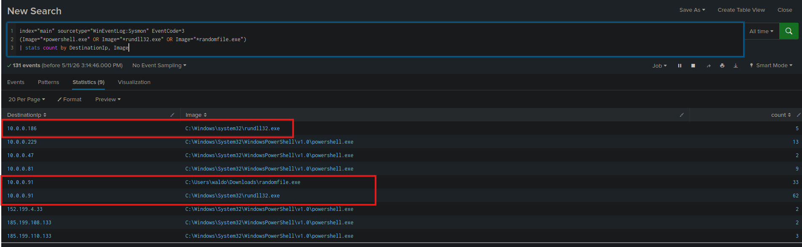
Answer:
10.0.0.186 and 10.0.0.91Intrusion Detection - Question 5: C2 Callback Port
Question: Find the port used by one of the two C2 callback server IPs.
index="main" sourcetype="WinEventLog:Sysmon" EventCode=3
(SourceIp="10.0.0.91" OR SourceIp="10.0.0.186")
| table _time, Image, SourceIp, SourcePort, DestinationIp, DestinationPort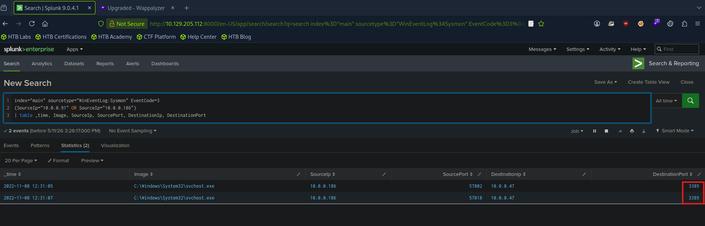
Answer:
3389Detecting Attacker Behavior With TTPs - Question 1: PsExec Password
Question: Find the password used during PsExec activity.
index="main" sourcetype="WinEventLog:Sysmon" EventCode=1 psexec
| table _time ComputerName User Image CommandLine ParentImage ParentCommandLine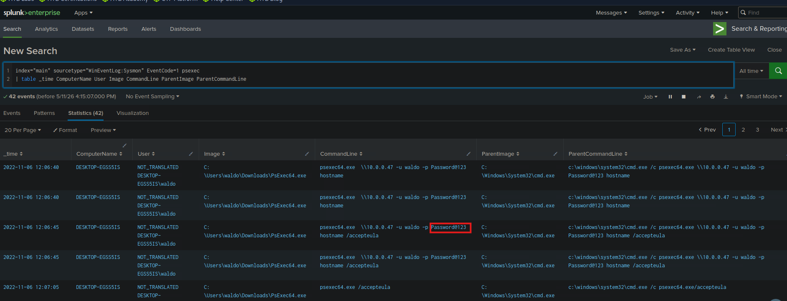
-p argument in the PsExec command line exposed the password.Answer:
Password@123Analytics-Driven Detection - Question 1: Remote Thread Outlier
Question: Find the source process image creating an unusually high number of threads in other processes, greater than two standard deviations above average.
index=* EventCode=8
| stats count as injected_threads by SourceImage
| eventstats avg(injected_threads) as avg stdev(injected_threads) as stdev
| eval threshold=avg+(2*stdev)
| where injected_threads > threshold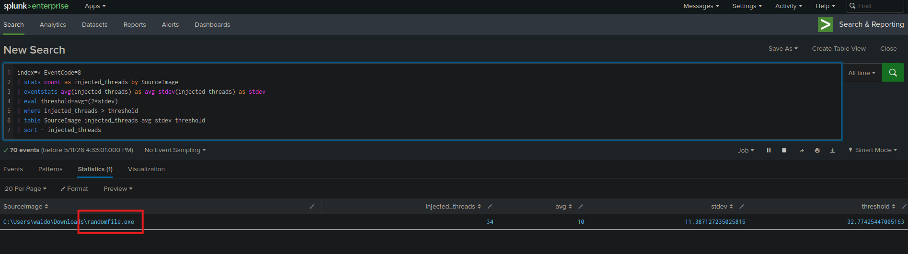
Answer:
randomfile.exeSkills Assessment - Question 1: Process Injecting into rundll32
Question: Find the process that created remote threads in rundll32.exe.
index=* EventCode=8 TargetImage="*rundll32.exe"
| table SourceImage TargetImage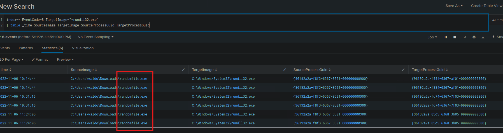
rundll32.exe was visible in Sysmon Event ID 8.Answer:
randomfile.exeSkills Assessment - Question 2: Process That Started the Infection
Question: Find through SPL searches against all data the process that started the infection.
The investigation starts from Sysmon Event ID 10, which records process access. Credential dumping tools
often access lsass.exe, so searching for processes interacting with LSASS gives a strong pivot
point into the infection chain.
index="main" EventCode=10 lsass
| stats count by SourceImageThe search filters for LSASS-related process access events and summarizes them by source process.
| SourceImage | Count |
|---|---|
csrss.exe |
59 |
wininit.exe |
59 |
msiexec.exe |
99 |
notepad.exe |
1 |
rundll32.exe |
4 |
Common Windows processes such as csrss.exe, wininit.exe, and
msiexec.exe can appear in LSASS-related activity. The suspicious entries are
notepad.exe and rundll32.exe. Since the lesson already investigated
notepad.exe, the other suspicious process and infection pivot is rundll32.exe.
Answer:
rundll32.exeKey Takeaways
- SPL investigations start with selecting the right event source and validating available fields.
- Windows Event IDs such as 4768 and 4624 are useful for authentication analysis.
- Sysmon Event IDs 1, 3, 7, 8, and 10 provide visibility into execution, networking, image loads, injection, and process access.
- Dashboards and reports can fail when macros or field names are wrong, so field validation matters.
- Analytics-driven searches help identify outliers such as abnormal remote thread creation.